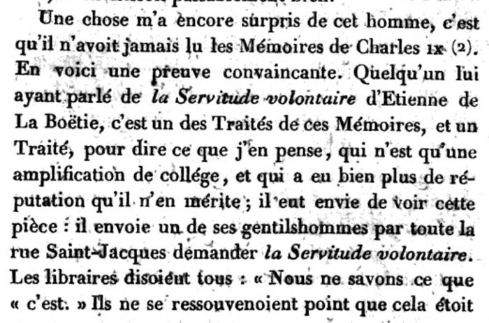
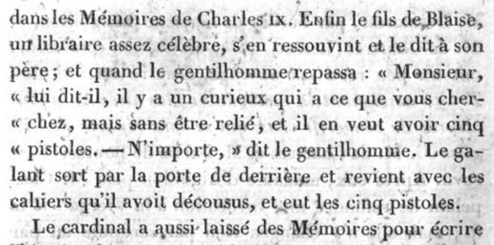

Richelieu and the Servitude volontaire (tome I, pp. 395–396)
French: Paris 1834, tome I, in the historiette of “Le cardinal de Richelieu”, pp. 395–396, scan n402–n403. Spelling as printed. Highlighted: the facts Lecky’s note uses.


Another thing about this man surprised me: he had never read the Memoirs of Charles IX. Here is convincing proof. Someone having spoken to him of Étienne de La Boétie’s Voluntary Servitude, which is one of the treatises in those Memoirs (and a treatise which, to say what I think of it, is nothing but a schoolboy’s amplification, and has had far more reputation than it deserves), he wanted to see the piece: he sends one of his gentlemen along the whole rue Saint-Jacques to ask for the Voluntary Servitude. The booksellers all said: “We don’t know what that is.” They did not remember that it was in the Memoirs of Charles IX. At last the son of Blaise, a fairly well-known bookseller, remembered it and told his father; and when the gentleman came by again: “Sir,” he said to him, “there is a collector who has what you are looking for, but unbound, and he wants five pistoles for it.” “No matter,” said the gentleman. The rascal goes out by the back door and comes back with the gatherings he had unstitched, and got the five pistoles.
(2) [Footnote in this edition:] Memoirs of the State of France under Charles IX. The treatise of voluntary servitude was printed for the first time in 1578, in volume 3 of this collection, folio 116.
Translation: this edition’s draft. The footnote is read in the OCR only.
Original French
Une chose m’a encore surpris de cet homme, c’est qu’il n’avoit jamais lu les Mémoires de Charles ix (2). En voici une preuve convaincante. Quelqu’un lui ayant parlé de la Servitude volontaire d’Etienne de La Boëtie, c’est un des Traités de ces Mémoires, et un Traité, pour dire ce que j’en pense, qui n’est qu’une amplification de collége, et qui a eu bien plus de réputation qu’il n’en mérite; il eut envie de voir cette pièce: il envoie un de ses gentilshommes par toute la rue Saint-Jacques demander la Servitude volontaire. Les libraires disoient tous: « Nous ne savons ce que « c’est. » Ils ne se ressouvenoient point que cela étoit [p. 396] dans les Mémoires de Charles ix. Enfin le fils de Blaise, un libraire assez célèbre, s’en ressouvint et le dit à son père; et quand le gentilhomme repassa: « Monsieur, « lui dit-il, il y a un curieux qui a ce que vous cher« chez, mais sans être relié, et il en veut avoir cinq « pistoles. — N’importe, » dit le gentilhomme. Le galant sort par la porte de derrière et revient avec les cahiers qu’il avoit décousus, et eut les cinq pistoles.
(2) Mémoires de l’état de la France sous Charles ix. Le Traité de la servitude volontaire a été imprimé pour la première fois, en 1578, dans le tome 3 de ce Recueil, folio 116.
Lecky (vol. II, ch. V, note 125): “It appeared for the first time, together with the Franco-Gallia, in a seditious book called Mémoires de l’Estat de France sous Charles IX.” The first printing and the collection come from this page and its note; that the Franco-Gallia was in the same collection is not on these pages. Lecky leaves out Tallemant’s low opinion of the treatise, which Lecky himself admired; see Montaigne’s praise of it on the Montaigne page.
Further down the rabbit hole
Sources that Lecky cites in the notes next to the ones that cite this page.
- Cibrario, Della economia politica del medio evoTurin, 1388: a heretic who held that the Devil made Adam and Eve, and that usury was no sin
- Chevalier, Lettres sur l’organisation du travailIf the shuttle could weave by itself, there would be no need of slaves: an economist answers the socialists of 1848
- Montaigne, EssaisLecky cuts Montaigne short and changes a word
- Buckle, History of Civilization in EnglandWeather and credulity, and the Scottish clergy’s Devil who had been studying for five thousand years
- Froude, The Nemesis of FaithThe deeper men feel sin, the nearer they drift to Rome: a novel that was burned at Oxford
- Allen, Inquiry into the Rise and Growth of the Royal PrerogativeAn oath of non-resistance that outlived the Revolution by some thirty years


Backlinks
Every place in Rationalism in Europe that links to this page (generated automatically when the site is built).
- Chapter V: note 125